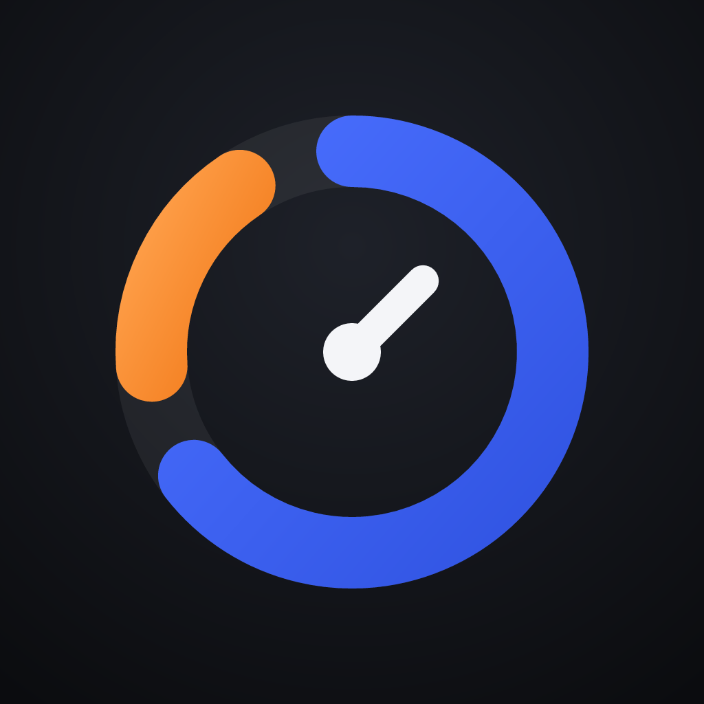

Orbit
İşler karışsa da süreler karışmaz. Gün içinde hangi işe ne kadar zaman ayırdığını tek dokunuşla tutan, molaları ayrı sayan iPhone uygulaması.
Destek ve iletişim
Soru, öneri veya sorun bildirimi için: orbittrackerapp@gmail.com
İşlerin, sürelerin ve notların yalnızca telefonunda saklanır. Verilerini dışa aktarmak için uygulamada Ayarlar → Verilerimi dışa aktar; hepsini silmek için Ayarlar → Tüm verileri sil.
Yeni iPhone'a geçerken
Eski iPhone'unda Ayarlar → Verilerimi dışa aktar'a dokun ve yedek dosyasını Dosyalar'a ya da iCloud Drive'a kaydet. Yeni iPhone'una Orbit'i kur, Ayarlar → Yedekten geri yükle'ye dokun ve o dosyayı seç. Yedek, yeni telefondaki işlerin ve kayıtların yerine geçer; geri yüklemeden hemen sonra Geri al'a dokunabilirsin.